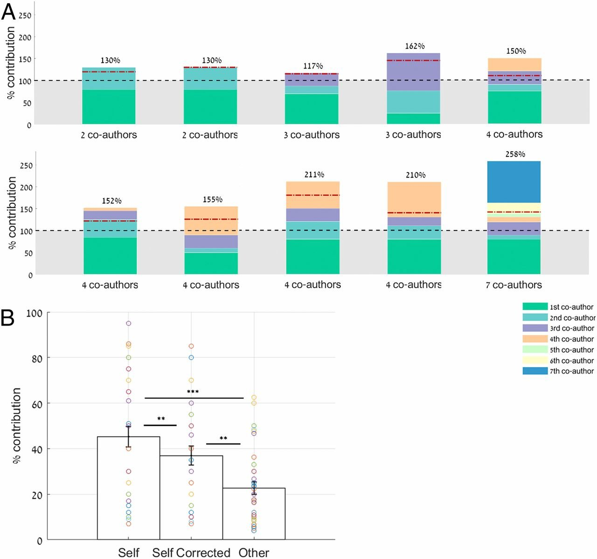

Authorship & Intellectual Credit
Overview
Group synthesis requires many types of contributions, from raw data to idea generation, analysis, group organization, figure development, conceptualizing, writing, and editing. Often, little of this work is directly compensated. Conflicts and misunderstandings about what contributions earn authorship arise – especially in the absence of a clearly articulated policy on intellectual credit. In this module we will discuss a few models for aligning expectations around intellectual credit and how they may differ depending on the participants and the particular product the group is developing. We’ll also take some time for project groups to develop or refine their own intellect credit policies.
Learning Objectives
After completing this module you will be able to:
- Define types of intellectual contributions to a synthesis project
- Describe some common frameworks for equitable authorship decisions
- Explain benefits (or avoided costs) of making authorship decisions both collaboratively and transparently
- Create a draft intellectual credit plan for your team
Preparation
None required.
Networking Session
- Jaclyn Hatala Matthes, Senior Scientist, Harvard Forest. Jackie specializes in land-atmosphere interactions, ecosystem responses to insect and climate disturbance, and scaling water and carbon processes with models. She is a co-PI of the Flux Gradient Synthesis Working Group, which brings together multiple data sources and people to better estimate the methane flux from upland systems at scale.
Intellectual Credit Module Content
In their Code of Ethics the Ecological Society of America lays out what seems like straightforward guidance for what contributions warrant authorship on a paper:
Researchers will claim authorship of a paper only if they have made a substantial contribution. Authorship may legitimately be claimed if researchers
conceived the ideas or experimental design;
participated actively in execution of the study;
analyzed and interpreted the data; or
wrote the manuscript
The recommendations from the International Committee of Medical Journal Editors (ICMJE), first published in 1978, updated in 2019, and again in 2025, goes a step farther and requires all 4 of the following responsibilities:
Substantial contributions to the conception or design of the work; or the acquisition, analysis, or interpretation of data for the work; AND
Drafting the work or reviewing it critically for important intellectual content; AND
Final approval of the version to be published; AND
Agreement to be accountable for all aspects of the work in ensuring that questions related to the accuracy or integrity of any part of the work are appropriately investigated and resolved.
But what are we to do in the context of a multidisciplinary group project, where the study design design often results from multiple overlapping and free-wheeling conversations and trials? Each contributor may have very limited knowledge of the others’ fields or expertise. Fairly judging authorship, let alone “being accountable for all aspects of the work” becomes much more complicated. But readers and journal editors have a right to expect that authors can stand behind their work.
In such cases, the potential for misunderstanding and conflict becomes obvious. And, of course, academia’s traditionally hierarchical structures can make it especially difficult for early career researchers to advocate for themselves in the moment. Proactively developing an authorship policy can help head off intra-group conflict, which can be especially destructive for early career researchers. It also helps the group to clarify expectations, maintain accountability, and allows researchers to rehearse potentially difficult conversations before they become personal.
Of course, it’s useful to bear in mind that human psychology also has a role to play in authorship conflicts. It is quite common for individuals to overestimate their own contribution to the work of a team, especially when the outcome is positive. Nelson et al. (2020) examined the phenomenon in the context of scientific publishing and found that authors almost universally over-estimated their own contribution to a project, at least with respect to how their team members perceived it.

At each stage of a project, different factors may work to distort, conceal, or amplify the contributions of some authors or potential authors. Take a few minutes to consider each project stage and how misperceptions might arise.
Group Discussion
Take a few minutes to reflect on your own experiences in each of these areas before expanding each of the below panels. In each area, what types of contributions have you noticed get under- or over-valued?
Opt-in v. Opt-Out
There are two major ways to approach authorship, whether you’re talking about papers, derived data, or software. Opt-in approaches require individuals to be invited to or request involvement in a product and set basic criteria for authorship. Opt-out approaches assume that anyone contributing data, or making contributions to, say, the R repo behind a package, will be credited as an author.
Some collaboration efforts use a hybrid system, where the primary paper issuing from a data assembly effort is expected to use an opt-out model (and therefore includes all the data contributors), while subsequent papers require potential authors to opt-in and participate in developing the analysis and writing the paper.
Researchers can be reluctant to opt-out of a paper for many reasons. They “should” have time. They need the paper for their CV. Or they are just embarrased to have misjudged their own capacity to contribute. If you find that you can’t contribute at a level that warrants authorship, the kindest thing you can do for your co-authors is to opt out.
Authorship is also not the only way to recognize contributors. When funding is the only contribution to the research, funders should appear in the acknowledgements section. Other contributions, such as translation, line editing, acquisition of permits, or other logistical support are also appropriate for the acknowledgements section, when the relevant individuals have not also contributed to developing the study and writing the paper. Data providers who have not contributed to study design should be credited by citing their data, in the references using a doi and appropriate bibliographic information.
An Evolving Landscape
Community science and knowledge co-production with non-academics, particularly Indigenous knowledge and rights-holders, have been growing rapidly in the last few years. The academic community is still struggling to come to terms with how best to honor and credit such research partners. Authorship is an academic currency that may or may not have value for community partners. Indigenous Peoples can be understandably wary about sharing data related to their land, resources, history, culture, and bodies. The CARE Principles (Collective Benefit, Authority to Control, Responsibility, and Ethics) were published in 2020 help researchers focus on the values most important to Indigenous data stewards, rather than focusing solely on the open-data FAIR Principles (Findable Accessible, Interoperable, and Reproducible) and concrete guidance is gradually being developed to guide researchers. Community science and Indigenous data found in repositories should include guidance on how they can ethically be reused.
Another emerging issue in intellectual credit is how to deal with the growing role of AI in research and publishing. Understanding how AI has been used in a research effort is critical to evaluating the reliability of results. Providing figures and asking AI to write a paper yields a very different result than providing bullet points along with the figures, or asking AI to clean up your first draft. In addition, almost every AI system currently available provides results by drawing on millions of public data sources, without any thought of crediting the originators. Journal publishers are starting to provide guidance about how to acknowledge researchers’ use of AI.
Breakout Groups
Next, we’ll take a closer look at three approaches to authorship policies from teams of varying sizes. Three breakout groups will focus on one policy each and report back on the approaches strengths and weaknesses. Please take 10 minutes to scan the assigned authorship policy and another 15 minutes to discuss it’s implications, what it might miss, how it might distort or align incentives for collaboration, data sharing, and freeloading.
Expanded Authorship Guidelines (Cooke et al. 2021)
CReDiT Framework (Brand et al. 2015)
Group discussion
We contend that there is no one “right” authorship policy. But each policy we’ve covered has advantages in certain situations. What matters most is that the research team discusses their approach and records it in an accessible location where it can be revisited and updated as needed.
Project Team Time
Gather in your project teams and begin to build out your own authorship approach, if you have not already.
Additional Resources
Papers & Documents
- Allen, L. et al., How Can We Ensure Visibility and Diversity in Research Contributions? How the Contributor Role Taxonomy (CReDiT) is Helping the Shift from Authorship to Contributorship. 2018. Learned Publishing
- Brand, et al. Beyond authorship: Attribution, contribution, collaboration, and credit. 2015. Learned Publishing, 28(2), 151–155.
- Dahlin, K.M. et al., Hear Every Voice, Working Groups that Work. 2019. Frontiers in Ecology and the Environment
- Jennings, L., Jones, K., Taitingfong, R. et al. Governance of Indigenous data in open earth systems science. Nat Commun 16, 572 (2025).
- Lund, B.D. and Naheem, K.T. (2024), Can ChatGPT be an author? A study of artificial intelligence authorship policies in top academic journals. Learned Publishing, 37: 13-21.
- Nelson, P.R. et al. Authors overestimate their contribution to scientific work, demonstrating a strong bias. 2020. PNAS.
- Puebla, I. et al. Ten simple rules for recognizing data and software contributions in hiring, promotion, and tenure. 2024. PLoS Computational Biology
- Wilkinson, M., Dumontier, M., Aalbersberg, I. et al. The FAIR Guiding Principles for scientific data management and stewardship. Sci Data 3, 160018 (2016).
Websites
Ecological Society of America Code of Ethics. Authorship criteria found at #22.
American Geophysical Union Publications and Ethics Policies.
Soil Organic Matter Synthesis Group authorship policy
Nutrient Network (NutNet) authorship policy
Herbivory Variability Network (HerbVar) participation guidelines